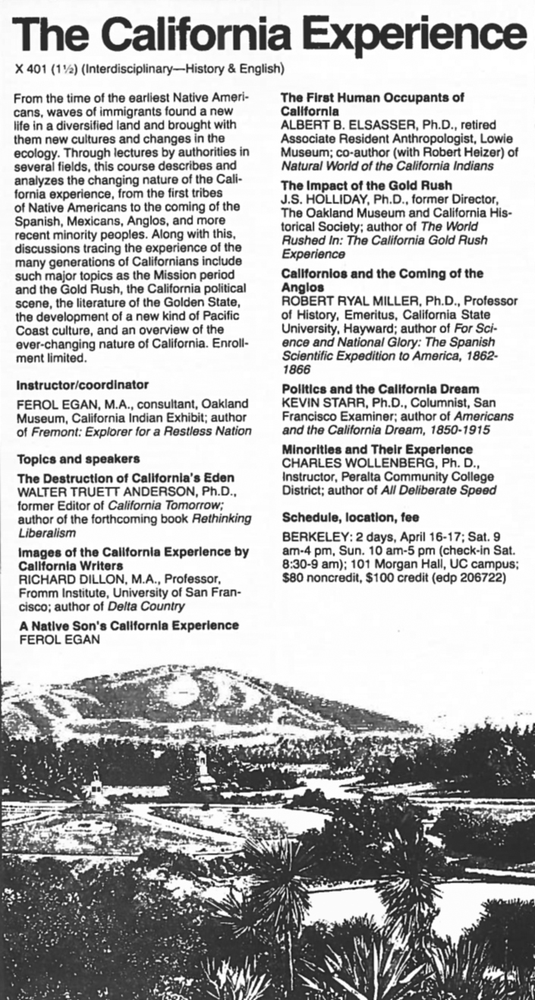
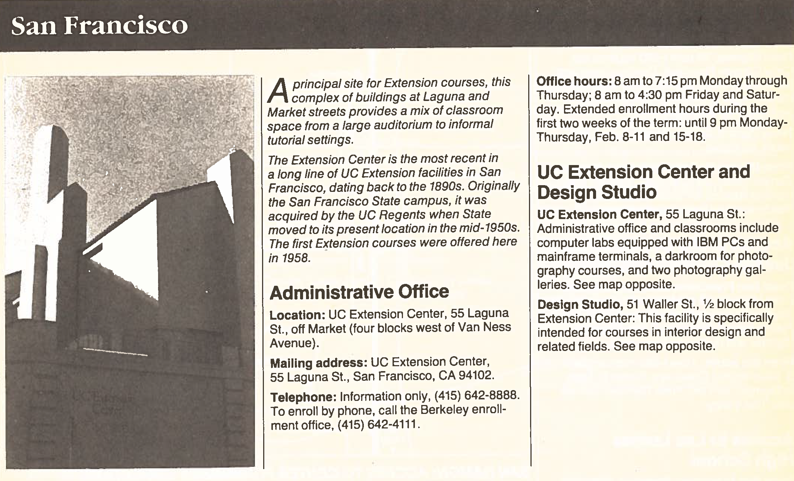

1971-1980
During the 1970s Extension moved to the forefront of organizations offering programs dealing with major social issues, including hazardous materials, alcohol and drug abuse, transportation planning, water quality and conservation, and biotechnology. In addition to preparing professionals to work in these areas, Extension programs frequently bring together politicians, corporate executives, government agencies, and experts from various fields to explore solutions to these problems.

1981-1990
In the 1980s, Extension produced more than 13,000 courses to enroll some 400,000 students every year, making it one of the largest, most diverse continuing education providers in the world. As a consequence, several Extension units begin offering programs throughout Europe and Asia, ranging from study programs exploring other cultures with high-level exchanges of technology and research.
